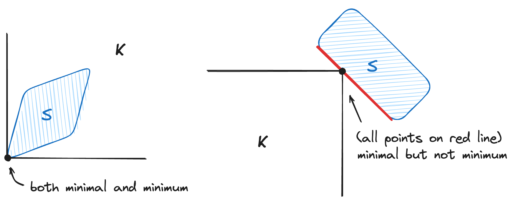
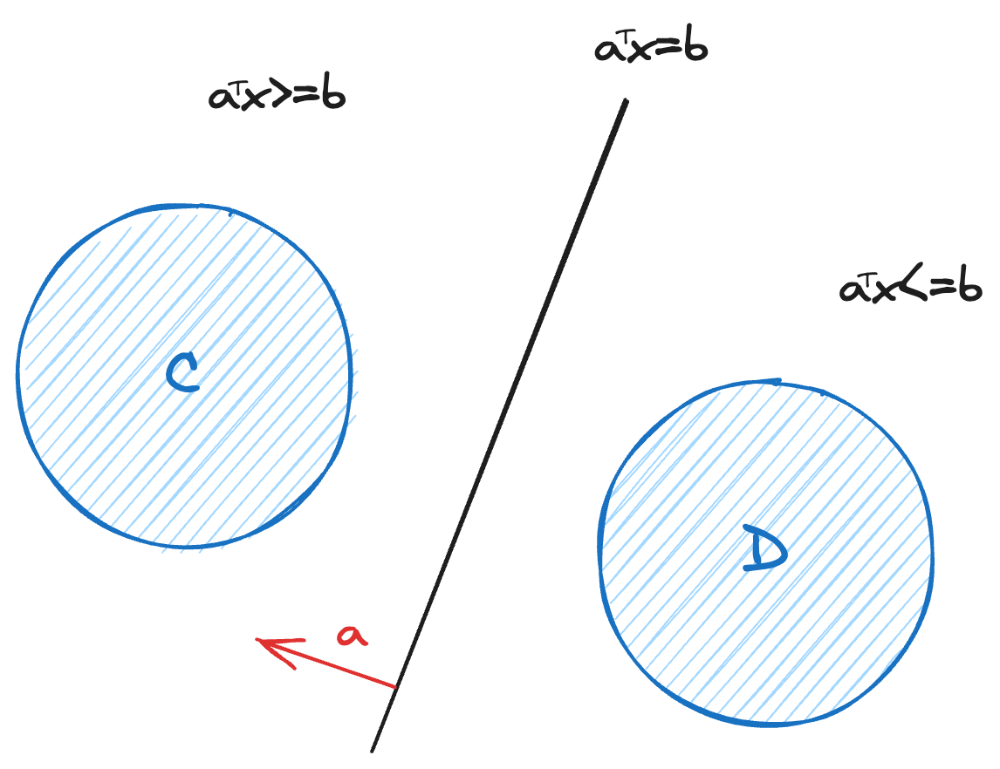
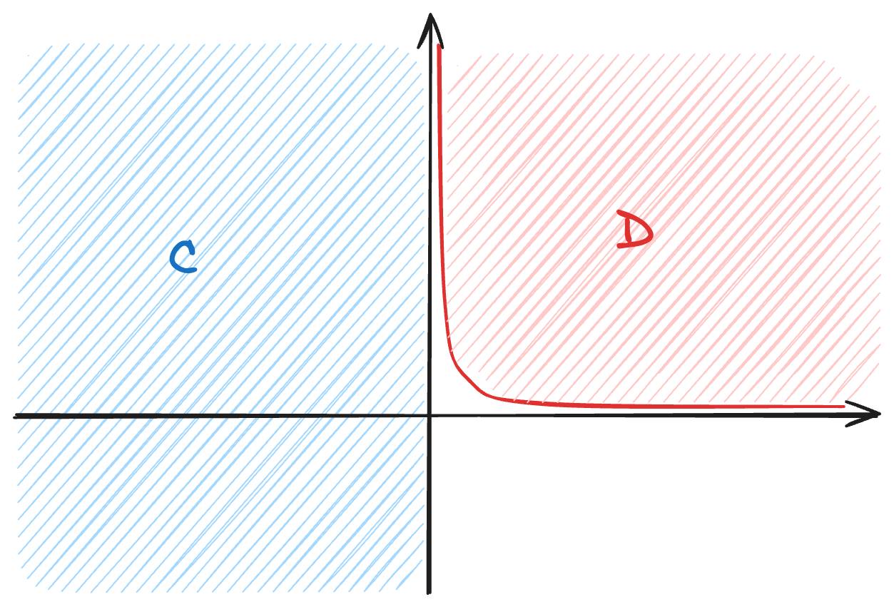
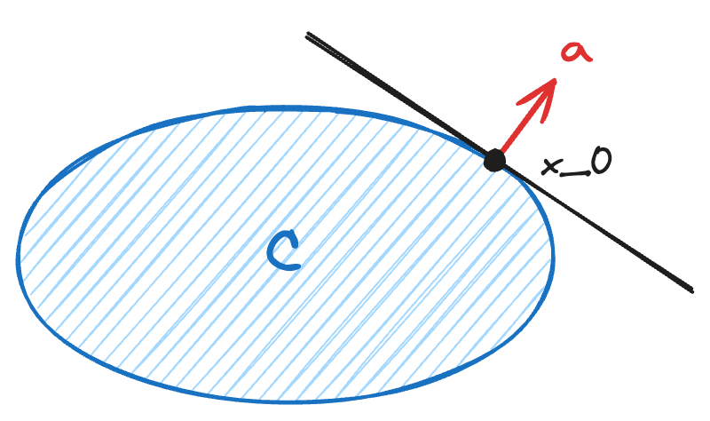
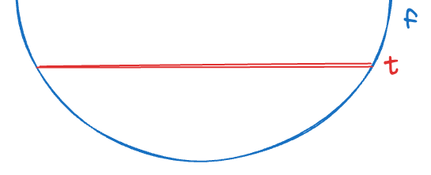
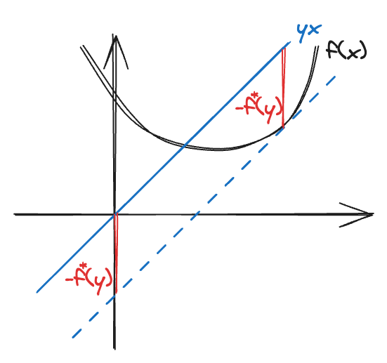
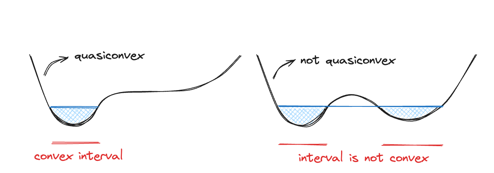

S. Boyd, L. Vandenberghe, Convex optimization, Cambridge university press, 2004.
Introduction
A (mathematical) optimization problem has the form: $$ \begin{aligned} \min\ &f_0(x)\\ \text{s.t }&f_i(x)\leq b_i,\ i=1,\dots,m. \end{aligned}\tag{1.1} $$
- \(x\in\mathbb{R}^n\): optimization variable
- \(f_0:\mathbb{R}^n\to\mathbb{R}\): objective function
- \(f_i:\mathbb{R}^n\to\mathbb{R}\): constraint function
A vector \(x^*\) is called optimal or solution of Problem (1.1) if it has the smallest objective value.
This book focus on convex optimization problems, where the objective and constraint functions are convex that satisfies: $$ f_i(\alpha x+\beta y)\leq\alpha f_i(x)+\beta f_i(y)\tag{1.3} $$ for all \(x,y\in\mathbb{R}^n\) and all \(\alpha,\beta\in\mathbb{R}\) with \(\alpha+\beta=1,\ \alpha,\beta\geq0\).
Convex optimization plays an important role in nonconvex problems.
- initialization for local optimization
- heuristics for nonconvex optimization
- bounds for global optimization (convex relaxation)
Convex sets
2.1 Affine and convex sets
An introduction of some useful sets.
2.1.1 Lines and line segments
Suppose \(x_1\neq x_2\) are two points in \(\mathbb{R}^n\), $$ y=\theta x_1+(1-\theta)x_2 $$ is a line, line segment if \(\theta\in\mathbb{R}\), \(\theta\in[0,1]\), respectively.
2.1.2 Affine sets
A set \(C\subseteq\mathbb{R}^n\) is affine if for any \(x_1,x_2\in C\) and \(\theta\in\mathbb{R}\), $$ \theta x_1+(1-\theta)x_2\in C. $$
Affine combination: $$ x=\theta_1x_1+\dots+\theta_kx_k,\ \theta_i\in\mathbb{R},\ \sum_{i=1}^k\theta_i=1 $$
Affine set contains every affine combination of its points.
- Ex. closed sets are not affine sets
- Ex. \(\mathbb{R}^2\) is an affine set
- Ex. \(\{x\mid Ax=b\}\) is an affine set
\(x_1,x_2\in C,\ A(\theta x_1+(1-\theta)x_2)+b=\theta b+(1-\theta)b=b\implies\theta x_1+(1-\theta)x_2\in C\)
Affine hull: the set of all affine combinations, denoted as \(\mathbf{aff}\ C\): $$ \mathbf{aff}\ C=\{\theta_1x_1+\dots+\theta_kx_k\mid x_1,\dots,x_k\in C,\ \sum_{i=1}^k\theta_i=1\} $$
Affine hull is the smallest affine set that contains \(C\).
2.1.4 Convex sets
A set \(C\subseteq\mathbb{R}^n\) is convex if for any \(x_1,x_2\in C\) and \(\theta\in[0,1]\), $$ \theta x_1+(1-\theta)x_2\in C. $$
Convex combination: $$ x=\theta_1x_1+\dots+\theta_kx_k,\ \theta_i\in[0,1],\ \sum_{i=1}^k\theta_i=1 $$
Convex set contains every convex combination of its points.
Convex hull: the set of all convex combinations, denoted as \(\mathbf{conv}\ C\): $$ \mathbf{conv}\ C=\{\theta_1x_1+\dots+\theta_kx_k\mid x_1,\dots,x_k\in C,\ \sum_{i=1}^k\theta_i=1,\ \theta_i\geq0\} $$
Convex hull is the smallest convex set that contains \(C\).
2.1.5 Cones
A set \(C\) is called a cone or nonnegative homogeneous if for every \(x\in C\) and \(\theta\geq0\), $$ \theta x\in C. $$
A set \(C\) is a convex cone if for any \(x_1,x_2\in C\) and \(\theta_1,\theta_2\geq0\), $$ \theta_1x_1+\theta_2x_2\in C.$$
Conic combination: $$ x=\theta_1x_1+\dots+\theta_kx_k,\ \theta_i\geq0 $$
Conic set: $$ x_1,x_2\in C,\ \theta_1,\theta_2\geq0\implies\theta_1x_1+\theta_2x_2\in C. $$
Cone contains every conic combination of its points.
Conic hull: $$ \{\theta_1x_1+\dots+\theta_kx_k\mid x_i\in C,\ \theta_i\geq0,\ i=1,\dots,k\} $$
Conic hull is the smallest cone that contains \(C\).
2.2 Some important examples
- The empty set \(\emptyset\), singleton \(\{x_0\}\), and the whole space \(\mathbb{R}^n\) are affine (hence convex) subsets of \(\mathbb{R}^n\).
- Any line is affine. If it passes zero, then it is a convex cone.
- A line segment is convex, but not affine unless it is singleton.
- A ray, \(\{x_0+\theta v\mid\theta\geq0, v\neq0\}\) is convex, but not affine. If \(x_0=0\), then it is a convex cone.
2.2.1 Hyperplane and halfspaces
A hyperplane is a set of the form: $$ \{x\mid a^\top x=b\}, $$ where \(A\in\mathbb{R}^n,a\neq0\) and \(b\in\mathbb{R}\).
Let \((n_x,n_y,n_z)^\top\) be the normal vector, with inner product: $$ n_x(x-x_0)+n_y(y-y_0)+n_z(z-z_0)=0\implies a^\top x=n_xx_0+n_yy_0+n_zz_0=b $$
A hyperplane divides \(\mathbb{R}^n\) into two halfspaces: $$ \{x\mid a^\top x\geq b\},\ \{x\mid a^\top x\leq b\},\ a\in\mathbb{R}^n,a\neq0,b\in\mathbb{R}. $$
2.2.2 Euclidean balls and ellipsoids
A (Euclidean) ball in \(\mathbb{R}^n\) has the form: $$ B(x_c,r)=\{x\mid|x-x_c|_2\leq r\}=\{x_c+ru\mid|u|_2\leq1\} $$
A Euclidean ball is a convex set.
An ellipsoid in \(\mathbb{R}^n\) has the form: $$ \mathcal{E}=\{x\mid(x-x_c)^TP^{-1}(x-x_c)\leq1\}=\{x_c+Au\mid|u|_2\leq1\} $$
An ellipsoid is a convex set.
2.3.4 Polyhedra
A polyhedra is defined as the solution set of a finite number of linear equalities and inequalities: $$ \mathcal{P}=\{x\mid \underbrace{a_j^Tx\leq b_j}_\text{inequality},j=1,\dots,m,\ \underbrace{c_j^Tx=d_j}_\text{equality},j=1,\dots,p\}=\{x\mid Ax\preceq b,\ Cx=d\}, $$ i.e., the intersection of a finite number of halfspaces(inequality) and hyperplanes(equality).
2.2.5 The positive semidefinite cone
- \(\mathcal{S}^n=\{X\in\mathbb{R}^{n\times n}\mid X=X^T\}\) denote the \(n\times n\) symmetric matrix.
- \(\mathcal{S}^n_+=\{X\in\mathcal{S}^{n}\mid X\succeq0\}\) denote the \(n\times n\) symmetric positive semidefinite matrix.
- \(\mathcal{S}^n_{++}=\{X\in\mathbb{R}^{n\times n}\mid X\succ0\}\) denote the \(n\times n\) symmetric positive definite matrix.
The set \(\mathcal{S}^n_+\) is a convex cone.
2.3 Operations preserving convexity
Operations that preserve convexity of sets, or can construct convex sets from others.
2.3.1 Intersection
- If \(S_1,S_2\) are convex, then \(S_1\cap S_2\) is convex.
- If \(S_\alpha\) are convex, \(\alpha\in\mathcal{A}\), then \(\bigcap_{\alpha\in\mathcal{A}}S_\alpha\) is convex.
- A closed convex set \(S\) is the intersection of all halfspaces \(\mathcal{H}\) that contains it: $$ S=\bigcap{\mathcal{H}\mid S\subseteq\mathcal{H}} $$
2.3.2 Affine functions
Recall the definition of affine functions \(f :\mathbb{R}^n\to\mathbb{R}^m,\ f(x)=Ax+b,\ A\in\mathbb{R}^{m\times n},b\in\mathbb{R}^m\).
- \(S\) is convex if and only if \(f(S)\) is convex.
- examples:
- scaling If \(S\subseteq\mathbb{R}^n\) is convex and \(\alpha\in\mathbb{R}\), then \(\alpha S=\{\alpha x\mid x\in S\}\) is convex.
- translation If \(S\subseteq\mathbb{R}^n\) is convex and \(t\in\mathbb{R}^n\), then \(S+t=\{x+t\mid x\in S\}\) is convex.
- projection If \(S\subseteq\mathbb{R}^m\times\mathbb{R}^n\) is convex, then \(P=\{x\mid(x,y)\in S\}\) is convex.
- sum If \(S_1,S_2\) are convex, then \(S_1+S_2=\{x+y\mid x\in S_1,y\in S_2\}\) is convex.
- Cartesian product If \(S_1,S_2\) are convex, then \(S_1\times S_2=\{(x,y)\mid x\in S_1,y\in S_2\}\) is convex.
2.3.3 Linear-fractional and perspective functions
Linear-fractional is more general than affine but still preserves convexity.
A perspective function is defined as \(P:\mathbb{R}^{n+1}\to\mathbb{R}^n,\ \mathbf{dom}\ P=\mathbb{R}^n\times\mathbb{R}_{++},\ P(z,t)=z/t\).
The perspective function normalizes the vector along the last component (e.g., camera coordinate \(\to\) pixel coordinate).
- If \(S\) is convex, then \(P(S)\) is convex.
A linear-fractional function is defined as \(L:\mathbb{R}^n\to\mathbb{R}^m,\ \mathbf{dom}\ L=\{x\in\mathbb{R}^n\mid c^\top x+d>0\},\ L(x)=\dfrac{Ax+b}{c^\top x+d}\).
The linear-fractional (projective) function is formed by composing the perspective function with an affine function.
suppose \(g:\mathbb{R}^n\to\mathbb{R}^{m+1}\) is affine given by \(g(x)=\begin{bmatrix}A\\c^\top\end{bmatrix}x+\begin{bmatrix}b\\d\end{bmatrix}\), construct the function \(f:\mathbb{R}^n\to\mathbb{R}^m\) given by \(f(x)=P\circ g(x)=\frac{(Ax+b)}{(c^Tx+d)}\).
- If \(S\) is convex, then \(L(S)\) is convex.
2.4 Generalized inequalities
2.4.1 Proper cones and generalized inequalities
A cone \(K\subseteq\mathbb{R}^n\) is called a proper cone if it satisfies the following:
- \(K\) is convex.
- \(K\) is closed.
- \(K\) is solid (nonempty interior).
- \(K\) is pointed (contains no line).
A proper cone \(K\) can be used to define generalized inequality, such as:
- partial order: \(x\preceq_Ky\iff y\succeq_K x\iff y-x\in K\)
- strict partial order: \(x\prec_Ky\iff y\succ_K x\iff y-x\in \mathbf{int}(K)\)
Generalized inequality \(\preceq_K\) satisfies:
- preserved under addition: \(x\preceq_Ky\) and \(u\preceq_Kv\implies x+u\preceq_Ky+v\)
- transitive: \(x\preceq_Ky\) and \(y\preceq_Kz\implies x\preceq_Kz\)
- preserved under nonnegative scalar: \(x\preceq_Ky\) and \(\alpha\geq0\implies\alpha x\preceq_K\alpha y\)
- reflexive: \(x\preceq_Kx\)
- antisymmetric: \(x\preceq_Ky\) and \(y\preceq_Kx\implies x=y\)
- preserved under limits: \(x_i\preceq_Ky_i\) for \(x_i\to x,y_i\to y\) as \(i\to\infty\implies x\preceq_Ky\)
Strict generalized inequality \(\prec_K\) satisfies:
- \(x\prec_Ky\implies x\preceq_Ky\)
- \(x\prec_Ky\) and \(u\preceq_Kv\implies x+u\prec_Ky+v\)
- \(x\prec_Ky\) and \(\alpha>0\implies\alpha x\prec_K\alpha y\)
- \(x\nprec_Kx\)
- \(x\prec_Ky\implies\) for \(u,v\) small enough, \(x+u\preceq_Ky+v\)
Examples of generalized inequality (\(\mathbb{R}^n_+\) and \(\mathcal{S}^n_+\) are proper cones):
- \(K=\mathbb{R}^n_+;\ x\preceq_{\mathbb{R}^n_+}y\iff y-x\in\mathbb{R}^n_+;\ y_i>x_i,\ \forall y_i\) (each component)
- \(K=\mathcal{S}_+^n; x\preceq_{\mathcal{S}_+^n}y\iff y-x\in\mathcal{S}_+^n\); not linear ordering (discuss minimum, minimal)
2.4.2 Minimum and minimal elements
An equality is said to be linear ordering if \(x,y\) are comparable, i.e., either \(x\leq y\) or \(x\geq y\).
Most property of ordinary inequality holds for generalized inequality, however, linear ordering does not hold. We introduce minimum/maximum and minimal/maximal elements:
- \(x\in S\) is (unique) minimum if \(\forall y\in S,\ x\preceq_Ky\).
- \(x\in S\) is minimal if \(\forall y\in S,\ y\preceq_Kx\) only if \(y=x\).
- \(x\in S\) is (unique) maximum if \(\forall y\in S,\ x\succeq_Ky\).
- \(x\in S\) is maximal if \(\forall y\in S,\ y\succeq_Kx\) only if \(y=x\).
set notations:
- \(x\in S\) is minimum if and only if \(S\subseteq x+K\).
- \(x\in S\) is minimal if and only if \((x-K)\cap S=\{x\}\).
For \(K=\mathbb{R}_+\), minimal and minimum are the same. We show some examples for \(K=\mathbb{R}^2_+\):

2.5 Separating and supporting hyperplanes
2.5.1 Separating hyperplane Theorem
Suppose \(C\) and \(D\) are nonempty disjoint convex sets, i.e., \(C\cap D=\emptyset\). Then there exist \(a\neq0\) and \(b\) such that \(a^\top x\leq b\) forall \(x\in C\) and \(a^\top x\geq b\) forall \(x\in D\). In other words, the affine function \(a^\top x−b\) is nonpositive on \(C\) and nonnegative on \(D\). The hyperplane \(\{x\mid a^\top x=b\}\) is called a separating hyperplane for the sets \(C\) and \(D\).

A separating hyperplane is called strict separation of the sets \(C\) and \(D\) if \(a^\top x<b\) forall \(x\in C\) and \(a^\top x>b\) for all \(x\in D\). Disjoint convex sets (even closed sets) need not be strictly separable. For example, \(C=\{(x,y)\mid x\leq0\}\) and \(D=\{(x,y)\mid xy\geq1, x>,y>0\}\):

The converse of the separating hyperplane theorem is not true. For example, hyperplane \(x=0\) separates \(C=D=\{0\}\), but \(C\) and \(D\) are not disjoint convex sets.
However, we can add various conditions such that the converse of separating hyperplane is true. For example, any two convex sets \(C\) and \(D\), with at least one of which is open, are disjoint if and only if there exists a separating hyperplane.
2.5.2 Supporting hyperplanes
Suppose \(C\subseteq\mathbb{R}^n\) and \(x_0\) is a point in its boundary \(\mathbf{bd}\ C\). If \(a\neq0\) satisfies \(a^\top x\leq a^\top x_0\) for all \(x\in C\), then the hyperplane \(\{x\mid a^\top x=b\}\) is called a supporting hyperplane to \(C\) at point \(x_0\).
This is equivalent to saying that \(x_0\) and \(C\) is separated by the hyperplane \(\{x\mid a^\top x=a^\top x_0\}\).

Supporting hyperplane Theorem For any nonempty convex set \(C\) and \(x_0\in\mathbf{bd}\ C\), there exists a supporting hyperplane to \(C\) at \(x_0\).
Converse of supporting hyperplane Theorem If a set is closed, has nonempty interior, and has a supporting hyperplane at every boundary point, then it is convex.
2.6 Dual cones and generalized inequalities
2.6.1 Dual cones
- cone \(K=\{x\mid\theta x\in K, \theta\geq0,x\in K\}\)
- dual cone \(K^*=\{y\mid x^\top y\geq0,\ \forall x\in K\}\)
Dual cone is always convex, even when the original cone is not. Similar to dual problem is always convex, even when the primal problem is not. We list some examples:
- subspaces \(V\subseteq\mathbb{R}^n\) are cone \(\implies V^*=V^\perp=\{y\mid v^\top y=0,\ \forall v\in V\}\)
- \(K=\mathbb{R}_+^n\implies K^*=\mathbb{R}_+^n\)
\(x^\top y\geq0,\ \forall x\succeq0\iff y\succeq0\)
- \(K=\mathcal{S}^n_+=\{X\in\mathcal{S}^n\mid z^\top Xz\geq0,\ z\in\mathbb{R}^n\}\implies K^*=\{Y\mid\text{tr}(XY)\geq0,\ X\in\mathcal{S}^n\}\)
\(\text{tr}(XY)\geq0,\ \forall X\succeq0\iff Y\succeq0\)
Properties:
- \(K^*\) is closed and convex
- \(K_1\subseteq K_2\implies K^*_2\subseteq K^*_1\)
- \(K\) has nonempty interior \(\implies K^*\) is pointed
- closure of \(K\) is pointed \(\implies K^*\) has nonempty interior
- \(K^{**}=\mathbf{cl}(\mathbf{conv}(K))\) (if \(K\) is convex, \(K^{**}=K\))
- \(K\) is a proper cone \(\implies K^*\) is a proper cone, i.e., \(K^{**}=K\)
2.6.2 Dual generalized inequalities
- \(x\preceq_Ky\iff \lambda^\top x\leq\lambda^\top y,\ \forall \lambda\succeq_{K^*}0\)
- \(x\prec_Ky\iff \lambda^\top x<\lambda^\top y,\ \forall \lambda\succeq_{K^*}0,\ \lambda\neq0\)
Dual characterization of minimum Recall that \(x\in S\) is (unique) minimum if \(\forall y\in S,\ x\preceq_Ky\).
- \(x\in S\) is minimum \(\iff\forall\lambda\succ_{K^*}0\), \(x\) is the unique minimizer of \(\lambda^\top z\) over \(z\in S\)
- \(\forall\lambda\succ_{K^*}0\), the hyperplane \(\{z\mid\lambda^\top(z-x)=0\}\) is a strict supporting hyperplane to \(S\) at \(x\)
dual characterization of minimal Recall that \(x\in S\) is minimal if \(\forall y\in S,\ y\preceq_Kx\) only if \(y=x\).
- \(\lambda\succ_{K^*}0\) and \(x\) minimized \(\lambda^\top z\) over \(z\in S\implies x\) is minimal
Converse is false, e.g., minimal but not minimizer.
Convex functions
3.1 Basic properties and examples
3.1.1 Definition
A function \(f:\mathbb{R}^n\to\mathbb{R}\) is convex if \(\mathbf{dom}\ f\) is a convex set and if for all \(x,y\in\mathbf{dom}\ f\), and \(\theta\) with \(0\leq\theta\leq1\), we have $$ f(\theta x+(1-\theta)y)\leq\theta f(x)+(1-\theta)f(y).\tag{3.1} $$
Any line segment between two points lies above the graph.
- \(-f\) is concave (we will only focus on convex properties in this note)
- affine is both convex and concave \(f(\theta x+(1-\theta)y)=\theta f(x)+(1-\theta)f(y)\)
We list some examples of convex function:
- \(f(x)=a^\top x+b\)
- \(f(x)=\text{tr}(A^Tx)+b\)
- \(f(x)=\exp(x)\)
- \(f(x)=x\log(x)\)
- \(f(x) = 1/x,\ x>0\)
- \(f(x)=\|x\|_p=(\sum_{i=1}^n|x_i|^p)^\frac{1}{p},\ p\geq1\)
For all \(x\in\mathbf{dom}\ f,v\in\mathbb{R}^n,\ g(t)=f(x+tv)\) is convex if and only if \(f(x)\) is convex.
3.1.2 Extended-value extension
It is usually convenient to extend the feasible of a convex function to \(\mathbb{R}^n\), we define an extended-value extension that is also convex so that we do not need to explicitly describe the domain. $$ \tilde{f}:\mathbb{R}^n\to\mathbb{R}\cup{\infty},\ \ \ \tilde{f}(x)=\begin{cases}f(x)&x\in\mathbf{dom}\ f\\ \infty&x\notin\mathbf{dom}\ f\end{cases} $$
3.1.3 First-order conditions
Suppose \(f\) is differentiable, then \(f\) is convex if and only if \(\mathbf{dom}\ f\) is convex and for all \(x,y\in\mathbf{dom}\ f\), $$ f(y)\geq f(x)+\nabla f(x)^\top(y-x).\tag{3.2} $$
Convex function always lies above the tangent line of any point.
3.1.4 Second-order conditions
Suppose \(f\) is twice differentiable, i.e., Hessian \(\nabla^2f\) exists, then \(f\) is convex if and only if \(\mathbf{dom}\ f\) is convex and for all \(x\in\mathbf{dom}\ f\), its Hessian is positive semidefinite: $$ \nabla^2f(x)\succeq0. $$
3.1.6 Sublevel sets
The \(t\)-sublevel sets of a convex function \(f:\mathbb{R}^n\to\mathbb{R}\) is defined as \(S_t=\{x\in\mathbf{dom}\ f\mid f(x)\leq t\}\). Sublevel sets of a convex function are convex for any value \(t\).

3.1.7 Epigraph
The graph of a function \(f:\mathbb{R}^n\to\mathbb{R}\) is defined as \(\{(x,f(x))\mid x\in\mathbf{dom}\ f\}\), which is a subset of \(\mathbb{R}^{n+1}\). The epigraph of a function \(f:\mathbb{R}^n\to\mathbb{R}\) is defined as \(\mathbf{epi}\ f=\{(x,t)\mid x\in\mathbf{dom}\ f,\ f(x)\leq t\}\subseteq\mathbb{R}^{n+1}\). A function is convex if and only if its epigraph is a convex set.
3.2 Operations that preserve convexity
Operations that preserve convexity of functions, allow us to construct new convex functions.
- \(f\) is convex\(\implies\alpha f(x),\ \alpha\geq0\) is convex
- \(f_i\) are convex\(\implies\sum f_i(x)\) is convex
- \(f_i\) are convex, \(w_i\) are nonnegative\(\implies\sum w_i f_i(x)\) is convex
- \(f\) is convex, \(g\) is affine \(\implies f(g(x))\) is convex
- \(f_i\) are convex\(\implies\max(f_1(x),\dots,f_n(x))\) is convex
- \(f(x,y)\) is convex, \(y\in\mathcal{A}\implies\sup_{y\in\mathcal{A}}f(x,y)\) is convex
Prove by epigraph.
3.2.4 Composition
Suppose \(g:\mathbb{R}^n\to\mathbb{R}^k,\ h:\mathbb{R}^k\to\mathbb{R}\), the compostion \(f=h\circ g:\mathbb{R}^n\to\mathbb{R}\) is defined by $$ f(x)=h(g(x))\ ;\ \ \mathbf{dom}\ f=\{x\in\mathbf{dom}\ g\mid g(x)\in\mathbf{dom}\ h\}. $$
scalar composition (\(k=1\))
$$ f^{\prime\prime}(x)=h^{\prime\prime}(g(x))\underbrace{[g^\prime(x)]^2}_{\geq0}+g^{\prime\prime}(x)h^\prime(g(x)).\tag{3.9} $$
In order to make \(f\) convex, we need \(f^{\prime\prime}\geq0\) (second-order conditions). By \((3.9)\), we need \(h^{\prime\prime}\geq0\) and both \(h^\prime,g^{\prime\prime}\geq0\) or \(\leq0\).
- \(f\) is convex if \(h\) is convex (\(h^{\prime\prime}\geq0\)) and nondecreasing, and \(g\) is convex (\(g^{\prime\prime},h^\prime\geq0\))
- \(f\) is convex if \(h\) is convex (\(h^{\prime\prime}\geq0\)) and nonincreasing, and \(g\) is concave (\(g^{\prime\prime},h^\prime\leq0\))
vector composition (\(k\geq1\))
$$ f^{\prime\prime}(x)=g^\prime(x)^T\nabla^2h(g(x))g^\prime(x)+\nabla h(g(x))^Tg^{\prime\prime}(x).\tag{3.15} $$
- \(f\) is convex if \(h\) is convex, \(h\) is nondecreasing in each argument, and \(g_i\) are convex
- \(f\) is convex if \(h\) is convex, \(h\) is nonincreasing in each argument, and \(g_i\) are concave
3.2.5 Minimization
We have seen that maximum or supremum of convex functions is convex. We now consider a speical form of minimization $$ g(x)=\inf_{y\in C}f(x,y)\tag{3.16} $$ is convex if \(g(x)>-\infty\) for all \(x\).
3.2.6 Perspective of a function
If \(f:\mathbb{R}^n\to\mathbb{R}\), then the perspective of \(f\) is the function \(g:\mathbb{R}^{n+1}\to\mathbb{R}\) defined by $$ g(x,t)=tf(x/t)\ ;\ \ \mathbf{dom}\ g=\{(x,t)\mid x/t\in\mathbf{dom} f,\ t>0\}. $$
If \(f\) is convex, then \(g\) is convex. We give a short prrof using epigraph and the perspective function of \(\mathbb{R}^{n+1}\) (Sec 2.3.3). For \(t>0\), we have $$ \begin{aligned} (x,t,s)\in\mathbf{epi}\ g&\iff tf(x/t)\leq s\\ &\iff f(x/t)\leq s/t\\ &\iff(x/t, s/t)\in\mathbf{epi}\ f \end{aligned} $$ Since \(f\) is convex\(\iff\mathbf{epi}\ f\) is convex, we have \(g\) is convex\(\iff\mathbf{epi}\ g\) is convex.
3.3 Conjugate function
3.3.1 Definition and examples
Let \(f:\mathbb{R}^n\to\mathbb{R}\), then \(f^*:\mathbb{R}^n\to\mathbb{R}\) is the conjugate of \(f\) defined by $$ f^*(y)=\sup_{x\in\mathbf{dom}\ f}\big(y^\top x-f(x)\big).\tag{3.18} $$
We immediately see that \(f^*\) is convex since it is the supremum of affine function of \(y\), whether \(f\) is convex or not. For example given an affine function \(f(x)=ax+b\), $$ f^*(y)=\sup_{x\in\mathbb{R}}\big(yx-(ax+b)\big)=\sup_{x\in\mathbb{R}}\big((y-a)x-b\big)=\begin{cases}-b&\text{if }y=a\\\infty&\text{if }y\neq a\end{cases} $$
For 1-dimensional case, conjugate function tries to find the maximum distance between \(yx\) and \(f(x)\). A nice demonstration can be found here: Fenchel conjugate function demo.

3.3.2 Basic properties
Fenchel’s inequality By \((3.18)\), we obtain the Fenchel’s inequality $$ f(x)+f^*(y)\geq y^\top x. $$
Conjugate of the conjugate If \(f\) is convex and closed, i.e., \(\mathbf{epi}\ f\) is a closed convex set, then \(f^{**}=f\), i.e., the conjugate of conjugate of \(f\) is \(f\) itself.
Differetiable functions If \(f\) is differentiable, then the conjugate of \(f\) is also called the Legendre transform of \(f\). Suppose \(f\) is convex and differetiable, the maximizer \(x^*\) must satisfy the first-order condition. Take the derivatives if \(y^\top x^*-f(x^*)\) to zero, we get \(y=\nabla f(x^*)\). Therefore, if \(y=\nabla f(x)\), we have a closed-form to compute the conjugate function $$ f^*(y)=\nabla f(x)^\top x-f(x). $$
3.4 Quasiconvex functions
3.4.1 Definition and examples
A function \(f:\mathbb{R}^n\to\mathbb{R}\) is called quasiconvex if all its sublevel sets are convex.

3.4.2 Basic properties
We could also characterize quasiconvexity like the definition of convex function: A function \(f\) is quasiconvex if \(\mathbf{dom}\ f\) is convex and if for all \(x,y\in\mathbf{dom}\ f\), and \(\theta\) with \(0\leq\theta\leq1\), we have $$ f(\theta x+(1-\theta)y)\leq\max\{f(x),f(y)\}.\tag{3.19} $$
Points between the line segmant cannot be larger than the \(\max\{f(x),f(y)\}\)-level.
3.4.3 Differentiable quasiconvex fucntions
First-order conditions Suppose \(f:\mathbb{R}^n\to\mathbb{R}\) is differentiable, then \(f\) is quasiconvex if and only if \(\mathbf{dom}\ f\) is convex and for all \(x,y\in\mathbf{dom}\ f\), $$ f(y)\leq f(x)\implies\nabla f(x)^\top(y-x)\leq0.\tag{3.20} $$
Second-order conditions Suppose \(f:\mathbb{R}^n\to\mathbb{R}\) is twice differentiable. If \(f\) is quasiconvex, then if \(\mathbf{dom}\ f\) is convex and all \(y\in\mathbb{R}^n\), we have $$ y^\top\nabla f(x)=0\implies y^\top\nabla^2f(x)y\geq0.\tag{3.21} $$
3.4.4 Operations that preserve quasiconvexity
- \(f_i\) are quasiconvex\(\implies\max(f_1(x),\dots f_k(x))\) is quasiconvex
- \(f_i\) are quasiconvex, \(w_i\) are nonnegative\(\implies\max(w_1f_1(x),\dots w_kf_k(x))\) is quasiconvex
- \(g:\mathbb{R}^n\to\mathbb{R}\) is quasiconvex, \(h:\mathbb{R}\to\mathbb{R}\) is nondecreasing\(\implies f=h\circ g\) is quasiconvex
- \(f\) is quasiconvex, \(y\in C\implies g(x)=\inf_{y\in C}f(x,y)\) is quasiconvex
- sum of quasiconvex functions is not necessary quasiconvex
3.5 Log-convex functions
3.5.1 Definition
A function \(f:\mathbb{R}^n\to\mathbb{R}\) is log-convex if \(f(x)>0\) for all \(x\in\mathbf{dom}\ f\) and \(\log\ f\) is convex. We also write log-convexity like the definition of convex function: a function \(f:\mathbb{R}^n\to\mathbb{R}\) with convex domain and \(f(x)>0\) for all \(x\in\mathbf{dom}\ f\) is log-convex if and only if for all \(x,y\in\mathbf{dom}\ f\) and \(0\leq\theta\leq1\), $$ f(\theta x+(1-\theta)y)\leq f(x)^\theta f(y)^{(1-\theta)}. $$
$$\log f(\theta x+(1-\theta)y)\leq\theta\log f(x)+(1-\theta)\log f(y).$$
3.5.2 Properties
Second-order conditions \(f\) is log-convex if and only if for all \(x\in\mathbf{dom}\ f\), $$ f(x)\nabla^2f(x)\succeq\nabla f(x)\nabla f(x)^\top. $$
3.6 Convexity with respect to generalized inequalities
Suppose that \(K\subseteq\mathbb{R}^n\) is a proper cone with associated generalized inequality \(\succeq_K\).
3.6.1 Monotonicity with respect to generalized inequality
- \(f:\mathbb{R}^n\to\mathbb{R}\) is \(K\)-nondecreasing if \(x\preceq_Ky\implies f(x)\leq f(y)\)
- \(f:\mathbb{R}^n\to\mathbb{R}\) is \(K\)-nonincreasing if \(x\succeq_Ky\implies f(x)\geq f(y)\)
- \(f:\mathbb{R}^n\to\mathbb{R}\) is \(K\)-increasing if \(x\preceq_Ky,x\neq y\implies f(x)<f(y)\)
- \(f:\mathbb{R}^n\to\mathbb{R}\) is \(K\)-decreasing if \(x\succeq_Ky,x\neq y\implies f(x)>f(y)\)
Gradient conditions for monotoncity Recall that a differentialbe function \(f:\mathbb{R}\to\mathbb{R}\) with convex domain is nondecreasing if and only if \(f^\prime(x)\geq0\) for all \(x\in\mathbf{dom}\ f\). This can also be extended to generalized inequalities:
- \(\nabla f(x)\succeq_{K^*}0\iff f\) is \(K\)-nondecreasing
- \(\nabla f(x)\preceq_{K^*}0\iff f\) is \(K\)-nonincreasing
- \(\nabla f(x)\succ_{K^*}0\implies f\) is \(K\)-increasing
- \(\nabla f(x)\prec_{K^*}0\implies f\) is \(K\)-decreasing
3.6.2 Convexity with respect to a generalized inequality
A function \(f:\mathbb{R}^n\to\mathbb{R}^m\) is \(K\)-convex if for all \(x,y\in\mathbf{dom}\ f\) and \(0\leq\theta\leq1\), $$ f(\theta x+(1-\theta)y)\preceq_K\theta f(x)+(1-\theta)f(y). $$
First-order conditions A differentiable function \(f\) is \(K\)-convex if and only if its domain is convex and for \(x,y\in\mathbf{dom}\ f\), $$ f(y)\succeq_Kf(x)+Df(x)(y-x). $$
These definitions reduce to ordinary convexity when \(m=1\) and \(K=\mathbb{R}_+\).
Convex optimization problems
4.1 Optimization problems
4.1.1 Basic terminology
We use the notation $$ \begin{aligned} \min_{x\in\mathbb{R}^n}\ &f_0(x)\\ \text{s.t. }\ &f_i(x)\leq0,\ i=1,\dots,m\\ &h_i(x)=0,\ i=1,\dots,p \end{aligned}\tag{4.1} $$ to describe the problem of finding an \(x\) that minimized \(f_0(x)\) with some constraints. We call
- \(x\in\mathbb{R}\) the optimization variable
- \(f_0:\mathbb{R}^n\to\mathbb{R}\) the objective function
- \(f_i:\mathbb{R}^n\to\mathbb{R}\) the equality constraints
- \(h_i:\mathbb{R}^n\to\mathbb{R}\) the ineuality constraints
We say the problem is unconstrained if there is no constraints in Problem \((4.1)\).
The domain of Problem \((4.1)\) is defined as $$ \mathcal{D}=\bigcap_{i=0}^m\mathbf{dom}\ f_i\cap\bigcap_{i=1}^p\mathbf{dom}\ h_i. $$
A point \(x\in\mathcal{D}\) is feasible if it satisfies all constraints. Problem \((4.1)\) is said to be feasible if there exists at least one feasible point. The set of feasible points is called the feasible set. The optimal value \(p^*\) of Problem \((4.1)\) is defined as $$ p^*=\inf\{f_0(x)\mid f_i(x)\leq0,i=1,\dots,m,\ h_i(x)=0,i=1,\dots,p\}. $$
We say \(x^*\) is an optimal point if \(f_0(x^*)=p^*\). The set of all optimal points is called the optimal set, denoted as $$ X_\text{opt}=\{x\mid f_i(x)\leq0,\ i=1,\dots,m,\ h_i(x)=0,i=1,\dots,p,\ f_0(x)=p^*\}. $$
A feasible point \(x\) with \(f_0(x)\leq p^*+\epsilon\) is called \(\epsilon\)-suboptimal. A feasible point \(x\) is locally optimal if there exists an \(R>0\) such that \(x\) solves $$ \begin{aligned} \min_{x\in\mathbb{R}^n}\ &f_0(z)\\ \text{s.t. }\ &f_i(z)\leq0,\ i=1,\dots,m\\ &h_i(z)=0,\ i=1,\dots,p\\ &\|z-x\|_2\leq R \end{aligned} $$ with variable \(z\), i.e., \(x\) miminizes \(f_0\) over a neighborhood.
Normally, optimal means global optimal.
We say the \(i\)-th constraint \(f_i(x)\leq0\) is
- active/binding if \(f_i(x)=0\) (at the boundary of feasible set)
- inactive/non-binding if \(f_i(x)<0\) (interior of the feasible set)
- redundant if it does not affect the feasible set
When proving most optimal conditions, only binding constraints are required to be differentiable, while non-binding ones are only required to be continuous. This textbook assumes all constraints are differentiable in Sec 5.5.3.